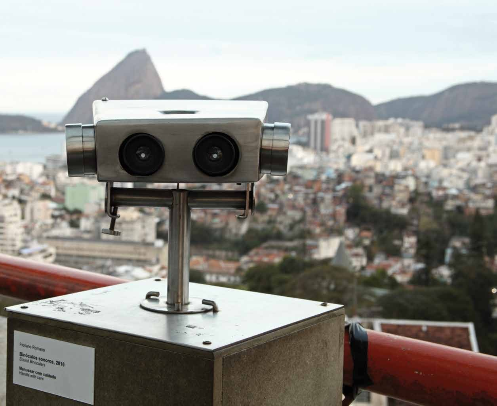
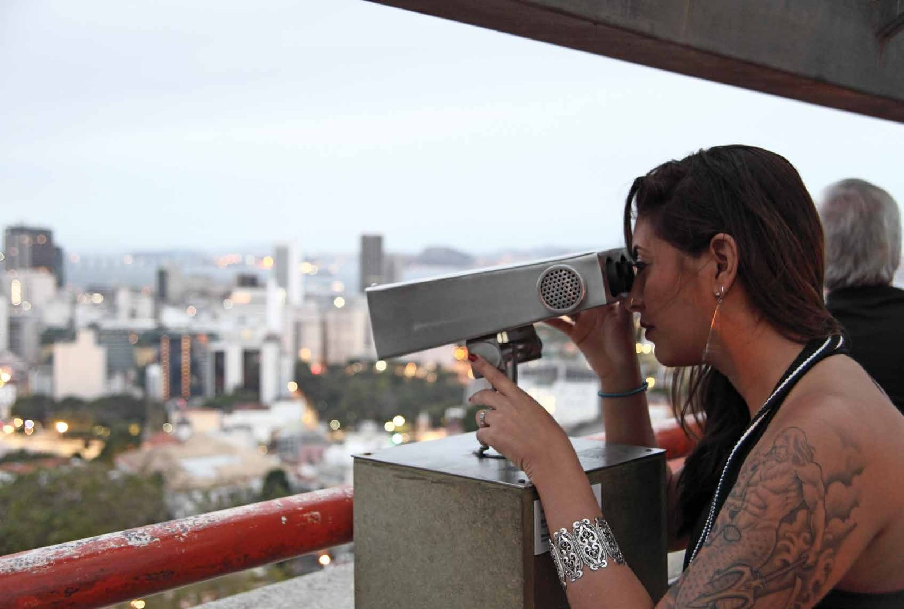
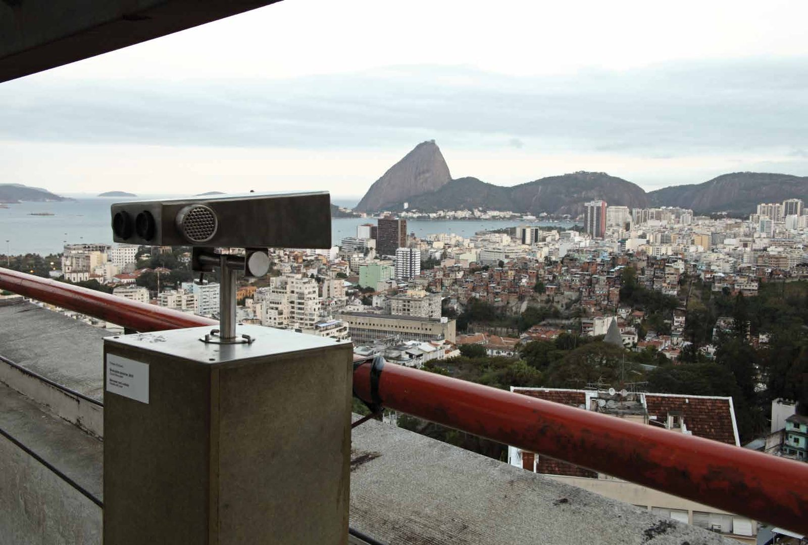

Binóculos Sonoros
Sound recording in preparation.
Coin-operated panoramic binoculars adapted to play a fictional narrative about the landscape. Shown in the exhibition Muro de Som, Parque das Ruínas, 2016.
- Materials
- Coin-operated panoramic binoculars, adapted; fictional narrative
- Venue
- Parque das Ruínas, Rio de Janeiro
- Exhibition
- Muro de Som (2016)


